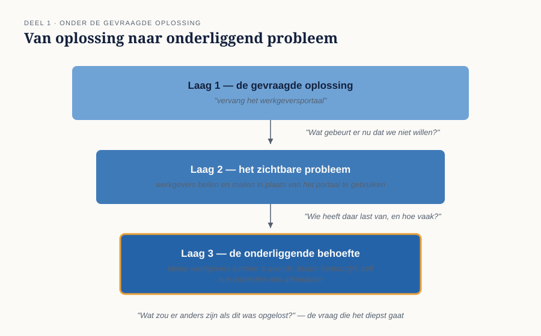
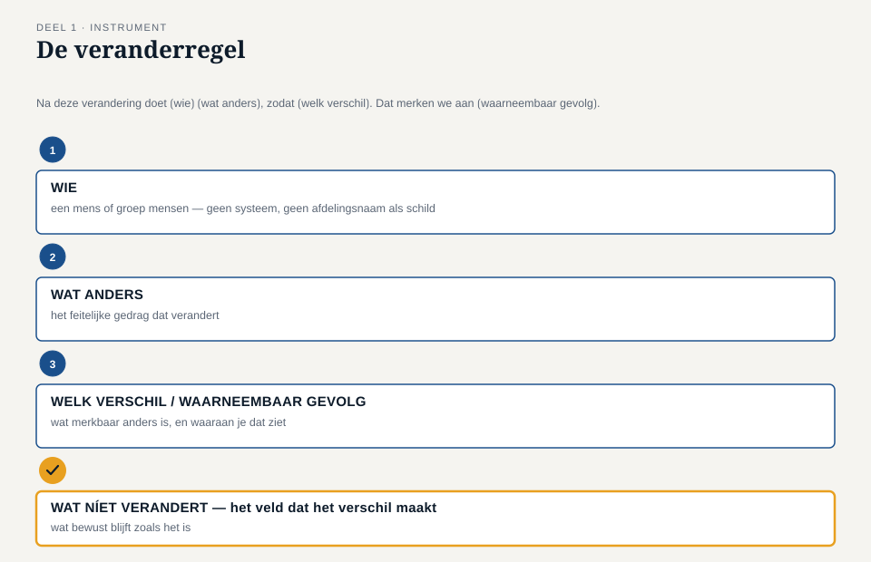

Deel 1 — Verandering mogelijk maken
Reader · Ductus-cursus Business-analyse · niveau 1 (fundament) · deel 1 van 30
Over deze cursus en het examen. Deze cursus bereidt voor op het ECBA-examen van IIBA. Zij is uitdrukkelijk géén vervanging van het officiële examenmateriaal. De examenstof bestaat uit A Guide to the Business Analysis Body of Knowledge (BABOK Guide) en The Business Analysis Standard, beide van IIBA; de examenblauwdruk en het kandidatenhandboek staan op iiba.org. Alle formuleringen, figuren en werkvormen in dit materiaal zijn van Ductus. Waar wij naar begrippen uit de BABOK Guide verwijzen, doen wij dat in onze eigen woorden — studeer voor het examen altijd óók de bron.
1.1 Waar dit deel over gaat
Dit is het eerste deel van de cursus en het legt de bodem: wat business-analyse eigenlijk is, en waarom dat vak zich niet laat samenvatten als "eisen opschrijven".
Aan het eind van dit deel kun je:
- in eigen woorden zeggen wat business-analyse is en waartoe zij dient;
- het verschil aanwijzen tussen een probleem en een oplossing in een opdracht die je krijgt;
- een veranderregel opstellen: één zin die vastlegt wie na een verandering wat anders doet, en waaraan je dat merkt;
- uitleggen waarom business-analyse niet aan een functietitel, een sector of een projectvorm vastzit.
Dit deel sluit bevinding B1 uit de post-mortem van WGP 2.0.
1.2 De casus: een vraag aan Merel
Uit het casusdossier: Meridiaan Pensioen heeft het programma WGP 2.0 na 26 maanden gestopt. Er is een herstartgroep gevormd.
Hanneke Steenbergen, directeur Uitvoering, vraagt Merel Duijvestein bij zich. Merel werkt ruim twee jaar bij Klantenservice werkgevers.
"We gaan opnieuw beginnen. Jij weet als geen ander hoe het werk echt loopt, dus ik wil jou erbij. Wat heb je nodig om te beginnen?"
"Wat is de opdracht?"
"Zorgen dat werkgevers hun mutaties zelf kunnen doorgeven. Zoals de bedoeling was."
"Dat konden ze al. Er is een portaal."
"Dat gebruiken ze niet."
"Weten we waarom niet?"
Stilte. "Nee. Dat is misschien wel precies wat je moet uitzoeken."
Dat is het beginpunt van het vak. De opdrachtgever heeft een oplossing in gedachten, de aanleiding is echt, en niemand weet wat er precies aan de hand is. Wat Merel hierna doet, is business-analyse — ongeacht wat er op haar visitekaartje staat.
1.3 Wat business-analyse is
Business-analyse is het werk dat verandering mogelijk maakt door te bepalen wat er moet veranderen en waarom, en door dat zo scherp te maken dat anderen er iets mee kunnen.
Drie dingen aan die omschrijving verdienen aandacht.
"Verandering mogelijk maken." Business-analyse is geen beschrijvende bezigheid. Zij bestaat omdat een organisatie iets anders wil gaan doen dan zij nu doet. Er is altijd een verandering in het spel: een nieuw product, een nieuwe wet, een proces dat vastloopt, een systeem dat vervangen wordt. Geen verandering, geen analyse.
"Bepalen wat en waarom." Niet: opschrijven wat er gevraagd wordt. Dat is een misvatting die veel schade aanricht en die in WGP 2.0 letterlijk terug te vinden is (bevinding B3). Wat gevraagd wordt is materiaal; wat nodig is, moet blijken.
"Zodat anderen er iets mee kunnen." Analyse die niemand gebruikt, is geen analyse maar documentatie. De opbrengst van het vak is niet een document, maar een besluit dat beter genomen wordt, een bouwer die weet wat hij bouwt, een afdeling die weet wat er verandert.
Business-analyse is niet gebonden aan een functietitel
Business-analyse wordt gedaan door mensen die business analyst heten, maar net zo goed door product owners, informatieanalisten, projectleiders, procesadviseurs, beleidsmedewerkers en door mensen als Merel die vanuit de uitvoering worden gevraagd. Het examen toetst het vak, niet het beroep.
Datzelfde geldt voor de context: business-analyse gebeurt in projecten, in doorlopend productwerk, bij fusies, bij wetswijzigingen, in de zorg, bij de overheid, in de industrie. De concepten die je in deel 2 leert, zijn juist zo geformuleerd dat ze in al die situaties gelden.
1.4 Het verschil tussen een probleem en een oplossing
Kijk nog eens naar het directiebesluit dat WGP 2.0 startte:
"We vervangen het werkgeversportaal."
Dat is een oplossing. Een volstrekt redelijke oplossing misschien, maar wel een oplossing — en zij werd vastgesteld voordat iemand had bepaald wat het probleem was. Dat is bevinding B1, en het is de moedervlek van dit soort projecten: alles wat daarna misgaat, is er logisch uit af te leiden.
Waarom is dat zo schadelijk?
- Een oplossing laat zich niet weerleggen. Je kunt niet vaststellen of "een nieuw portaal" klopt. Je kunt wél vaststellen of "kleine werkgevers krijgen hun correcties niet ingevoerd" klopt: je gaat kijken, je telt.
- Een oplossing verbergt de afweging. Zodra de oplossing vaststaat, gaat elk gesprek over de invulling ervan. Alternatieven — het bestaande portaal verbeteren, het derde kanaal formaliseren, de correctielogica aanpakken — komen niet meer aan bod.
- Een oplossing kan slagen terwijl de organisatie faalt. WGP 2.0 werd opgeleverd, werkt, en heeft nauwelijks storingen. Precies dat maakt de post-mortem zo ongemakkelijk.

Terugwerken van oplossing naar probleem
Je krijgt vrijwel nooit een probleem aangereikt. Je krijgt een oplossing, en je moet er onder komen zonder de opdrachtgever het gevoel te geven dat je zijn besluit ter discussie stelt. Drie vragen doen het meeste werk:
- "Wat gebeurt er nu dat we niet willen?" — dwingt naar waarneembaar gedrag in plaats van naar een oordeel.
- "Wie heeft daar last van, en hoe vaak?" — brengt omvang en betrokkenen in beeld, en scheidt het incident van het patroon.
- "Wat zou er anders zijn als dit opgelost was?" — dit is de belangrijkste. Als niemand die vraag kan beantwoorden, is er nog geen opdracht, hoeveel budget er ook is toegekend.
Merk op dat geen van deze vragen "waarom" heet. "Waarom wil je een nieuw portaal?" klinkt als een tegenwerping. De drie vragen hierboven klinken als belangstelling en leveren meer op. Dat is geen trucje maar vakmanschap: je hebt de opdrachtgever de rest van het traject nog nodig.
1.5 De werkvorm: de veranderregel
Het instrument van dit deel is de veranderregel: één zin die vastlegt wat een verandering feitelijk inhoudt. Hij dwingt tot concreetheid voordat er iets bedacht, gepland of gebouwd wordt.
Het stramien
Na deze verandering doet (wie) (wat anders), zodat (welk verschil). Dat merken we aan (waarneembaar gevolg). Wat níet verandert: (wat blijft zoals het is).
Vijf velden. De eerste vier zijn de zin zelf; het vijfde is het veld dat het verschil maakt.
Wie. Een mens of een groep mensen, geen systeem en geen afdelingsnaam als schild. "De organisatie" is geen antwoord. "Werkgevers met minder dan vijftig medewerkers die zelf hun mutaties invoeren" is een antwoord.
Wat anders. Een handeling in de werkelijkheid, in de tegenwoordige tijd. Niet "beschikt over", niet "wordt in staat gesteld tot", maar: doet iets dat hij eerder niet deed, of doet iets niet meer dat hij eerder wel deed.
Welk verschil. Waartoe dat leidt voor de organisatie of voor die persoon. Hier hoort waarde te staan — daarover gaat deel 2 uitvoerig.
Waaraan we het merken. Iets wat je kunt waarnemen, tellen of navragen. Dit veld is de kiem van de maatstaven uit deel 9, en het adresseert bevinding B7 al in het eerste gesprek.
Wat níet verandert. Dit is het veld dat mensen willen overslaan en dat de meeste discussie oplevert — en dat is precies de bedoeling. Zolang niet is uitgesproken wat blijft, vult iedereen dat zelf in, en die stille invullingen komen pas boven bij de oplevering. Bij WGP 2.0 nam Uitvoering aan dat correcties met terugwerkende kracht gewoon zouden blijven lopen zoals altijd. Niemand had dat opgeschreven, dus niemand controleerde het. Zet dit veld erin, en dat gesprek vindt in maand 1 plaats in plaats van in maand 22.

Twee voorbeelden
Een slechte, met de kenmerken die je zult herkennen:
"Meridiaan beschikt over een modern, gebruiksvriendelijk werkgeversportaal dat klaar is voor de toekomst."
Geen mens erin, geen handeling, geen verschil, niets waarneembaars, en niets uitgesloten. Het is een wens, geen veranderregel — en het is nagenoeg letterlijk wat er in het projectvoorstel van WGP 2.0 stond.
Een bruikbare, zoals Merel hem na haar eerste ronde zou kunnen opschrijven:
"Na deze verandering voeren werkgevers met minder dan vijftig medewerkers ook hun correcties met terugwerkende kracht zelf in, zodat zij daarvoor niet meer hoeven te bellen en Klantenservice die tijd aan andere vragen kan besteden. Dat merken we aan het aantal telefoontjes over correcties, dat we nu wekelijks tellen. Wat níet verandert: de manier waarop grote werkgevers bestanden aanleveren, en de controle door Uitvoering op correcties boven een bepaald bedrag."
Deze zin is aanvechtbaar — en dat is de kwaliteit ervan. Iemand kan zeggen: "die grens van vijftig klopt niet" of "die controle moet juist ook veranderen". Dat gesprek kun je voeren. Over "klaar voor de toekomst" kun je geen gesprek voeren.
Wanneer de veranderregel niet past
Bij zuiver verplichte veranderingen — een wetswijziging die hoe dan ook moet — voelt het veld "welk verschil" gekunsteld: het verschil is dat je aan de wet voldoet. Vul dan bij "welk verschil" in wat er misgaat als je het niet doet, en besteed de aandacht aan "wat níet verandert". Juist bij verplichte veranderingen is de verleiding groot om er van alles bij te doen omdat "we er toch aanzitten".
1.6 Waarde: een vooruitblik
In de veranderregel staat een veld "welk verschil". Dat is waarde, en waarde is het begrip waar dit vak om draait. Twee dingen alvast, omdat ze in dit deel al opspelen:
Waarde is niet hetzelfde als geld. Minder fouten, minder wachttijd, minder risico, aantoonbaar voldoen aan een verplichting, werk dat draaglijker wordt: het zijn allemaal vormen van waarde. Geld is er één van, en vaak een afgeleide.
Waarde is altijd waarde voor iemand. Wat voor de werkgever waardevol is (zelf kunnen corrigeren) is voor Uitvoering mogelijk lastig (minder zicht op wat er gebeurt). Wie waarde noemt zonder erbij te zeggen voor wie, heeft nog niets gezegd. Bevinding B2 gaat hierover, en deel 2 en deel 9 werken het uit.
1.7 Wat het examen hierover vraagt
Dit deel dekt het eerste examendomein, business-analyse begrijpen, dat met twintig procent van de vragen het zwaarste domein van het ECBA-examen is. Verwacht vragen die vragen om:
- business-analyse te herkennen in een situatiebeschrijving, ook als niemand die zo noemt;
- te bepalen wat de rol van analyse is bij het mogelijk maken van een verandering;
- te herkennen dat business-analyse in uiteenlopende sectoren en werkvormen voorkomt;
- waarde te herkennen en te benoemen voor wie zij ontstaat, en te weten dat uitkomsten na afloop worden beoordeeld.
Twee waarschuwingen voor de examenvorm. Ten eerste zijn de vragen situatiegebonden: je krijgt een korte schets en moet de beste handeling of interpretatie kiezen, niet een definitie reproduceren. Ten tweede is het antwoord dat "het meest volgens het boek" is niet altijd het antwoord dat je op je werk zou geven. Kies op het examen consequent voor wat het vak voorschrijft.
Begrippen, Nederlands en Engels
Het nieuwe ECBA-examen bestaat alleen in het Engels. Vanaf dit deel houden we daarom een tweetalige begrippenlijst bij; in deel 10 oefen je er in het Engels mee.
| Nederlands | Engels |
|---|---|
| business-analyse | business analysis |
| verandering | change |
| behoefte | need |
| oplossing | solution |
| belanghebbende | stakeholder |
| waarde | value |
| context | context |
| uitkomst | outcome |
| resultaat, opgeleverd product | output |
| baat, opbrengst | benefit |
1.8 Terug naar de casus
Bevinding B1 luidde: de opdracht was een oplossing, geen probleem. Met dit deel is die bevinding te sluiten, en wel op twee manieren.
Vaststellend: het besluit "vervang het werkgeversportaal" bevatte geen enkel element van een veranderregel. Er stond geen mens in, geen handeling, geen verschil, niets waarneembaars en niets uitgesloten. Er viel dus niets aan te toetsen — niet vooraf, en na oplevering ook niet.
Herstellend: de herstartgroep begint niet met een oplossing maar met de vraag wie na afloop wat anders doet. In de delen 5 tot en met 9 wordt die zin stap voor stap onderbouwd: met impact, met behoeften, met belanghebbenden, met opties en met maatstaven. In deel 10 verdedig je het geheel.
Vooruit naar deel 2. De veranderregel bevat een veld dat we nog niet konden invullen: "welk verschil". Om dat goed te doen heb je een denkraam nodig dat verandering, behoefte, oplossing, belanghebbende, waarde en context in samenhang bekijkt. Dat denkraam is het onderwerp van deel 2, en het is de ruggengraat van zowel het examen als de rest van dit niveau.